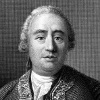

1739 yılında genç bir İskoç yazar olan 28 yaşındaki David Hume (1711-1776), A Treatise of Human Nature (İnsan Doğası Üzerine) adlı üç ciltlik eserinin ilk cildini yayınladı. Kendisini, kitabın kilise otoriteleri ve diğer filozoflar tarafından sert bir şekilde eleştirilmesine hazırlamıştı.
Ancak beklenen olmadı. Hume daha sonra yazdığı bir yazıda beş yıl boyunca yazmaya uğraştığı kitabının “ölü doğduğunu” söyleyecekti. Birkaç bağnazın dışında kimse kitabın farkına bile varmamıştı.

Gerçekten de Hume, yaşamı boyunca felsefe alanında hep başarısız oldu. Gelirinin büyük bölümü, hayatının sonlarına doğru çok satan kitaplar arasına girecek olan altı ciltlik History of England’dan (İngiltere Tarihi) geliyordu. Ancak günümüzde, memleketi olan Edinburgh merkezli İskoç Aydınlanması’nın en önemli filozof ve siyasi figürlerinden biri olarak görülmektedir.
Hume orta halli bir ailenin çocuğuydu. İki yaşındayken babası ölmüştü. Annesi Katherine tarafından büyütüldü. Çok zeki bir çocuktu. On bir yaşında Edinburgh Üniversitesi’ne girdi. Hukuk ve işletme kariyeri yapmayı planlıyordu. Ancak yirmi üç yaşında Fransa’ya gidip üç yıl boyunca bir köyde yaşadı. Bu sırada A Treatise of Human Nature isimli kitabını yazacaktı.
Kitabının ilgi görmemesinin ardından İskoçya’da iki kez profesörlük başvurusunda bulundu. Her iki başvurusu da reddedildi. Bir dönem, İngiltere adına İtalya’da diplomatlık yaptı. Daha sonra Edinburgh Kütüphanesi’nde bir iş buldu. Bu iş ona History of England’ı yazması için gerekli zaman ve kaynakları sundu.
1766 yılında Fransız filozof Jean Jacques Rousseau’ya (1712-1778) İngiltere’ye kaçması için yardımcı oldu. Rousseau, din karşıtı bir kitap yazmasının ardından İsviçre ve Fransa’dan sürgün edilmişti. Ancak iki filozof kısa süre sonra anlaşmazlığa düştüler ve Hume Rousseau’yu “hainlikle” suçladı.
Aralarında iktisatçı Adam Smith’in de (1723-1790) bulunduğu İskoç Aydınlanması’nın diğer figürleri ile dost olan Hume, alçakgönüllü mizah anlayışı ile meşhurdu. Bir keresinde yazmaktan sıkıldığında ne yaptığını şu sözlerle ifade etmişti: “Yemek yerim, tavla oynarım. Arkadaşlarımla görüşüp keyiflenirim.” Hume hiç evlenmedi. Altmış beş yaşında bağırsak kanserinden öldü.
Ek Bilgiler
1- Hayatı boyunca ateist olmakla suçlanan Hume’un Edinburgh’ta yaşadığı sokaklardan biri Aziz David Sokağı olarak adlandırılmıştır. Bu alaycı adlandırma Hume’un bir arkadaşının yaptığı şakadan ileri gelmektedir. Arkadaşı bu ismi sokaktaki evlerden birinin üzerine Hume genelde ateistlikle suçlandığı için tebeşirle yazmıştı.
2- Hume’ün asıl adı David Home’dur. 1734 yılında adının yazılışını değiştirmiştir.
3- 1744 yılında ilk felsefe profesörü olma girişiminin başarısızlığa uğramasının ardından, genç bir aristokrat olan Annandale Markizi’ne (1720-1792) ders vermeye başlamıştır. Ancak Hume’un şanssızlığı yine kendini gösterir ve Markiz çıldırır. Her şeye rağmen ünlü filozof, başka bir iş bulana kadar yaklaşık bir yıl boyunca derslere devam etmiştir.